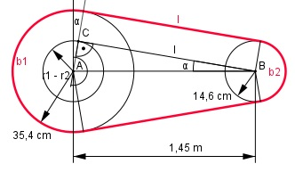
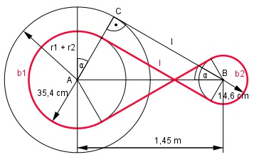

Aufgabe 105 Zwei Riemenscheiben mit den Radien 35,4 cm und 14,6 cm haben einen Mittenabstand von 1,45 m. Wie lang muss der Riemen sein, wenn sich die Scheiben a) gleichsinnig bzw. b) entgegengesetzt drehen sollen?


a) Im Dreieck ABC: 1,45 m = 145 cm r1 – r2 35,4 cm – 14,6 cm sin α° = --------- = ------------------- = 0,1434 145 cm 145 cm --> α = 8,2° l cos 8,2° = --------- |*145 cm 145 cm l = cos 8,2° * 145 cm = 0,9898 * 145 cm = 143,5 cm 2 * π * r1 * (180° + 2 * α) b1 = ------------------------------- = 360° 2 * π * 35,4 cm * (180° + 2 * 8,2°) b1 = ------------------------------------- = 360° = 121,3 cm 2 * π * r2 * (180° - 2 * α) b2 = ------------------------------ = 360° 2 * π * 14,6 cm * (180° - 2 * 8,2°) b2 = ------------------------------------- = 360° = 41,7 cm lges = 2 * l + b1 + b2 = = 2 * 143,5 cm + 121,3 cm + 41,7 cm = 450 cm b) Im Dreieck ABC: r1 + r2 35,4 cm + 14,6 cm sin α° = --------- = ------------------- = 0,34483 145 cm 145 cm --> α = 20,2° l cos 20,2° = --------- | *145 cm 145 cm l = cos 20,2° * 145 cm = 0,9385 * 145 cm = = 136,1 cm 2 * π * r1 * (180° + 2 * α) b1 = ------------------------------ = 360° 2 * π * 35,4 cm * (180° + 2 * 20,2°) b1 = -------------------------------------- = 360° = 136,1 cm 2 * π * r2 * (180° + 2 * α) b2 = ----------------------------- = 360° 2 * π * 14,6 cm * (180° + 2 * 20,2°) b2 = -------------------------------------- = 360° = 56,1 cm lges = 2 * l + b1 + b2 = = 2 * 136,1 cm + 136,1 cm + 56,1 cm = 464,4 cm